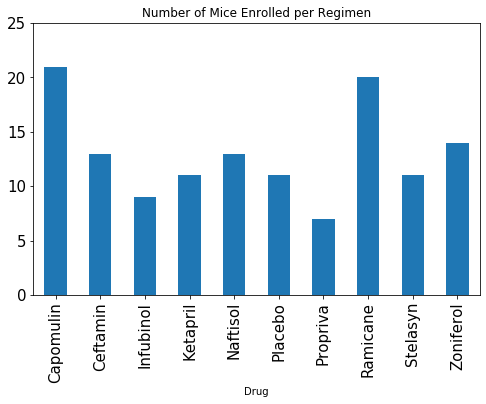
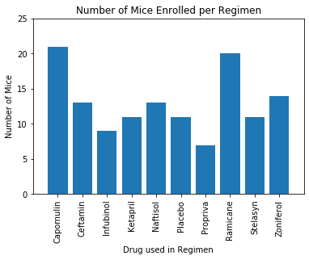
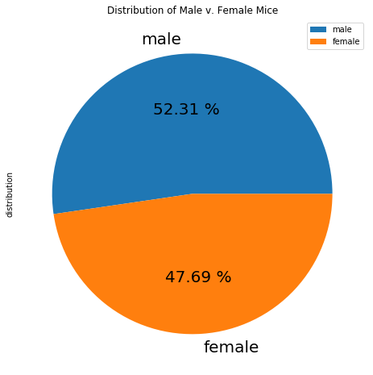
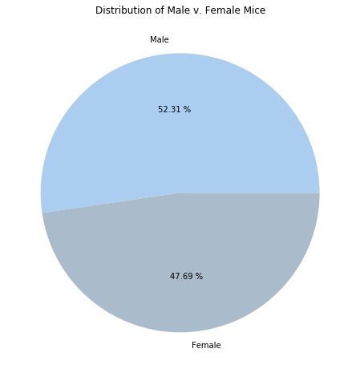
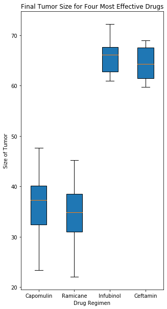
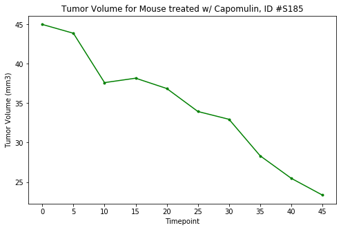
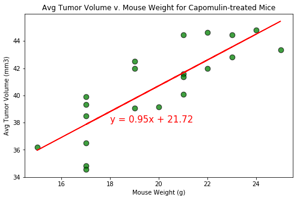

Bio Page
Link to Nowhere
Link to Nowhere
Link to Nowhere
Example Project

a bar plot showing number of data points for each treatment regimen using pandas

a bar plot showing number of data points for each treatment regimen using pyplot

a pie plot showing the distribution of female versus male mice using pandas

a pie plot showing the distribution of female versus male mice using pyplot

a box plot of the final tumor volume of each mouse across four regimens of interest

a line plot of time point versus tumor volume for a mouse treated with Capomulin

a scatter plot of mouse weight versus average tumor volume for the Capomulin regimen